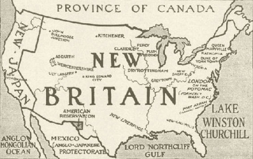

|
The Zimmermann telegram is fascinating history — ripe for the imagination of Diplomacy players. The telegram was the proverbial "straw" that broke American resolve to remain neutral in the war in Europe — what became called World War One. The Facts: The story goes that in January of 1917, the British admiralty — in the legendary Room 40, the precursor to MI-6 — intercepted a coded telegram from the Imperial German foreign ministry. The telegram was instructions to the German ambassador in Mexico. The coded telegram outlined a proposal to militarily assist the Mexicans if they sought to re-take the states of Texas, New Mexico, and Arizona — a partial Reconquista — from the United States. They decoded the message relatively easily and ultimately shared it with the United States. The war in Europe broke out in August, 1914, and was stalemated. The U.S. had announced and maintained neutrality in the “European War”. American commerce blossomed with all sides. The Allies (Britain, France, Russia, and other powers) wanted (desperately) for the U.S. to enter the war, obviously on their side. Germany’s best, and most realistic hope was that America remain neutral. While the war was stalemated on many fronts, German use of submarines (U-boats) was devastating. Germany justified their use as response to the British blockade which had likewise been devastating. American popular political opinion was divided: pacifist, pro-Allied, and even pro-Central Powers. Mexico was in the midst of revolution and civil war. Tensions between Mexico and the U.S. were high. There was Mexican resentment festering since the Mexican War in 1848, and the annexation of Texas, New Mexico, Texas and a portion of California. Pancho Villa, leader of one of several factions, had led a raid into New Mexico in 1916. The U.S. conducted a nine-month-long “punitive expedition” in response. The expedition had seen the bloody occupation of Vera Cruz, and that, in turn, had spawned anti-American demonstrations in several South and Latin American countries. This wasn’t a pillar of President Woodrow Wilson’s idealistic foreign policy. Japan, nominally an allied nation, was known to be “shopping”. Germany entertained hopes that Japan could be induced to make war against (pre-revolution) Russia in the east, and relieve the Central Power’s eastern fronts. Germany had instituted “unrestricted” submarine warfare in early 1915 in response to the British blockade, and allied and neutral sea-borne commerce with the allies. Several merchant ships, including passenger liners had been sunk. In May the worldwide reaction to the sinking of the eastbound British liner Lusitania, with 1,924 souls lost, including women and children, and 114 Americans saw Germany suspend unrestricted warfare. Germany was going to reinstitute it on February 1, 1917.

A portion of the 'smoking' telegram
The Fantasy Let us woolgather: The actual path of the telegram is in dispute. One version says it was sent via radio (wireless), and others state it was sent by cable. Because Germany's cable to the west was severed on the first day of the war, it relied on others - neutrals, even the U.S. - to relay cables for them. By other accounts it went through Sweden. A paper by the National Security Agency which includes the contemporary German after-action investigation says that the U.S. itself relayed the cable to Washington (apparently without attempting to decode it) via Denmark. Britain had 'tapped' both the Swedish and Danish cables. In any event, the British intercepted it, and decoded it. If the Germans knew the telegram (even coded) could possibly be overheard or "intercepted" by England, would they have entrusted such a momentously provocative subject to pass by British ears or eyes? The plan was not so time-critical that it couldn't have been delivered by diplomatic pouch [ed: !]. Britain had not, as yet, thoroughly broken the German code. Why the fevered effort to break this particular message — a diplomatic message? What led the Germans to believe that Mexico would risk war with the U.S. and even contemplate such a plan? The U.S. had so well-played the neutrality role, why jeopardize that? They had even "tolerated", the sinking of the Lusitania in May of 1915. Even that hadn't sufficiently provoked Wilson nor Congress. Additionally, Germany thought the resumption of unrestricted U-boat warfare would bring Britain's collapse within months. [Side notes: The Germans had even run advertisements in U.S. newspapers warning about traveling on Allied ships into the Atlantic war zone subject to unrestricted submarine attack. Additionally, the Germans claimed the liner was "fair game" as it was transporting munitions from the U.S. to Britain. The British adamantly denied this. Analysis of the force of the secondary blast belies this.] Despite the loss of innocent life, the entire incident was great good fortune for the British - a Eureka moment. The telegram, however, was the proverbial straw: The U.S. did enter the war three months later, and the rest is, as they say, history. Americans, as is their wont, think it was the deciding factor, and that it "won" the war. Germany may have unrealistically dreamed about American intervention on its side. A realistic gamble to ensure it would remain neutral was certainly worth it. Antagonizing U.S. - British relations was well worth the gamble. So what if..? 
What if, what if the Kaiser had notified the Americans that Germany had come into possession of a British telegram that promised Mexico the southwestern states? Wikipedia might read: "The Balfour(*) Telegram (or Balfour Note) was an internal diplomatic communication issued from the British Foreign Office in January, 1917 that proposed a military alliance between Great Britain and Mexico in the event of the United States entering World War I against the British. The proposal was intercepted and decoded by German intelligence. Revelation of the contents outraged American public opinion and helped generate support for the United States declaration of war on Britain and the Allies in April of the same year. "The message came in the form of a coded telegram dispatched by the Foreign Secretary of the British Empire, Arthur Balfour, on 11 January 1917. The message was intercepted as it was sent to the British ambassador to Mexico. Balfour sent the telegram in anticipation of Germany ending unrestricted submarine warfare, an act the German government presumed would almost certainly lessen anti-German sentiment and tensions in the United States. The telegram instructed the British Ambassador that if the United States appeared certain to enter the war on Germany's side, he was to approach the Mexican Government with a proposal for military alliance with funding from Great Britain." [Only names of foreign ministers, and nations were switched.] What if..? (*) Returning to reality, according to another document called the 'Balfour Declaration', the Zionist Jews were led to believe they would recieve a homeland in "Palestine". At the same time, T.E. Lawrence (Lawrence of Arabia) led the Arabs to anticipate self-determination in return for their participation in that theatre of the war against Ottoman Turkey. The fruit of these conflicting policies is, by some accounts, the present-day Arab-Israeli situation. Another "What if..?" for another day. My fantasy[?] sees Germany, the Central Powers, winning the war. Britain sued for a truce, and Germany gleefully accepted. The U.S. either remained neutral in furious indignant response to the British adventure in Mexico &mdash or actally assisted Germany in breaking the blockade and supplying food and finance. Even my imagination isn't so fervent to see a declaration of war on the Allies. Considerations and uninintended consequences There are always unintended consequences to consider, aren't there? In the factual story, the British faced a dilemma or two. In all cipher-breaking, the party breaking face these consequences and considerations. The British didn't want Germany to know they had deciphered this message. Additional valuable information could be collected if Germany was blissfully unaware it was being overheard. They wanted, however, to share it with the U.S. to toss that "final straw" on the camel's back. This was the age of "gentlemen don't read other gnetlemen's mail". Wilson particulary was attempting to conduct an ethical foreign policy. Might there be a negative reaction from the U.S. in having had a diplomatic message, innocently sent by its ambassador in Berlin intercepted, decrypted and read? It's analogous to informing a friend or family member about an unfaithful partner. There were definitely higher stakes involved here. The solution was something out of James Bond. The original telegram was sent to the German ambassador in Washington. It was to be forwarded from Washington to Mexico City. The British had an agent in Mexico City burgle the telegraph office! It was genius. The British could share the purloined message. The security of the American cable remained, apparently, politely secure. But, the story gets even better! The Ambassor in Washington re-encrypted the telegram in an older cipher. Not only could the Brits explain how they came into posession of the telegram, with an "honourable" explanation to the Americans, but the Germans would continue to believe the new code was still secure. They did, in fact, continue to use it (and be overheard) during the remainder of the war. I was troubled about the re-encrypt. Why? It seemed too serendipitous. I think it can be reasonably explained by the ambassador in Mexico City not having the most current code book. Why would the envoy to a relatively unimportant neutral have need for it? Need to know is a fundamental of security. Truth is, some times, stranger than fiction. The entire message (coded and decoded) can be read at AuthenticHistory.com. See Kevin's accompanying article CRYPTOLOGY: Alchemy of Diplomacy.
Kevin lives in Florida in the 15th and 16th century listening to — and humming along with — Gregorian chant. He has taken a brief respite from the Italian renaissance to explore this event that led to the U.S. entry into WWI.
If you wish to e-mail feedback on this article to the author, and clicking on the envelope above does not work for you, feel free to use the "Dear DP..." mail interface. |